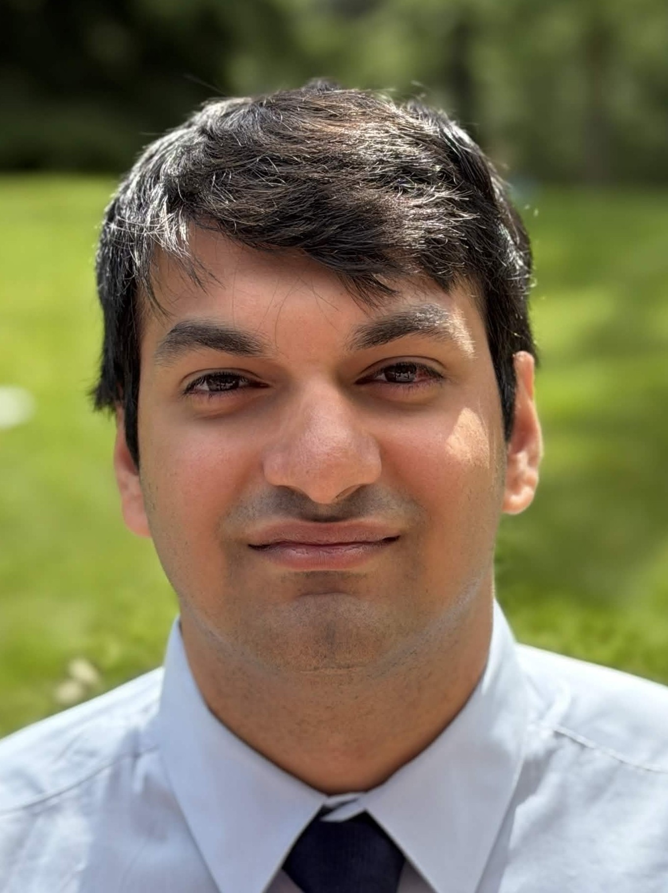

Team
The project is led from FARD Lab at UBC Okanagan. We collaborate with students and researchers across institutions.
Faculty
Principal Investigator
Dr. Fatemeh Fard is an Assistant Professor at UBC Okanagan leading the FARD Lab, where she investigates the intersection of Natural Language Processing and Software Engineering. Her research focuses on code representation learning, transfer learning, and large language models to advance AI-driven software development.
Student Researchers
PhD Researcher
Shahd is a PhD student in Computer Science at UBC researching AI for Software Engineering, focusing on large language models for system observability and code representation. With a Master's in Data Science from Queen's and prior experience as an Applied Scientist at Microsoft designing ML/NLP systems, she bridges cutting-edge research with practical, scalable applications.

Undergraduate Researcher
Aakash is a software engineer obsessed with what AI agents and retrieval-augmented systems can really do. Building at the intersection of LLM research and practical engineering.
Undergraduate Researcher
Sama Mohamed is a fourth-year Computer Science student and undergraduate research assistant at the University of British Columbia Okanagan. She is interested in the emerging capabilities of artificial intelligence, machine learning, and agentic systems, with a focus on understanding how these technologies can be applied in practical and research contexts.